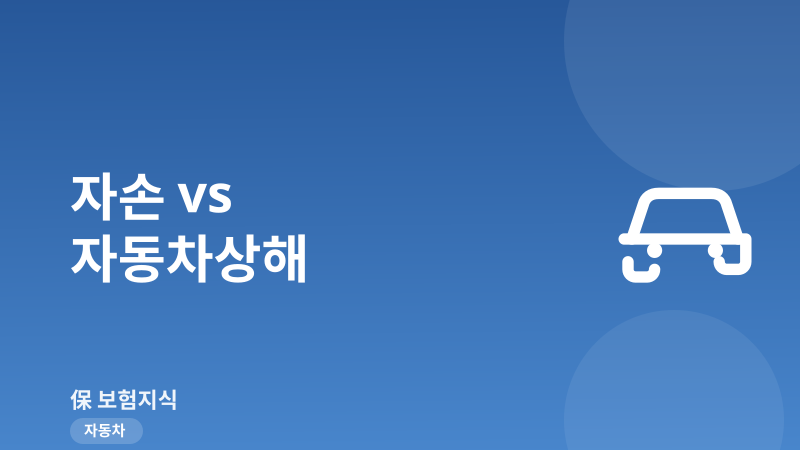
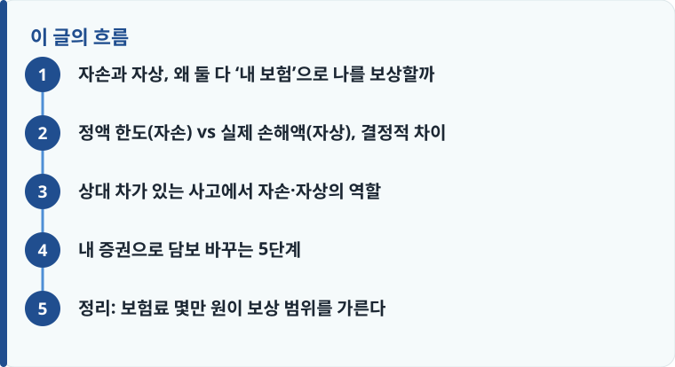

자손은 급수별로 미리 정해진 한도까지만 주는 정액 보상, 자상은 위자료·휴업손해·상실수익까지 실제 손해액 기준으로 주는 담보입니다.
자상은 본인 과실을 따져 깎는 과실상계 없이 약정 한도로 지급되는 경우가 많아, 같은 사고라도 자손보다 실제 수령액이 큽니다.
보험료 차이는 보통 연 몇만 원 수준이며, 자상 가입 시 자손은 자동으로 갈음되어 중복 가입이 아닙니다.
자손과 자상, 왜 둘 다 ‘내 보험’으로 나를 보상할까
자동차보험의 대인배상은 기본적으로 ‘상대방’이 다쳤을 때 보상하는 담보입니다. 그런데 내 차에 탄 나 자신, 내 가족, 동승자가 다치거나 사망하면 누가 보상할까요. 이때 작동하는 것이 자기신체사고(줄여서 자손)와 자동차상해(자상)입니다. 두 담보 모두 내 차에 탄 사람의 인적 피해를 ‘내 자동차보험’으로 보상한다는 점에서 목적이 같습니다. 특히 상대 차가 아예 없는 단독사고(가로수 충돌, 가드레일 추돌, 빗길 전복 등)나 내 과실이 8~10할로 큰 사고에서는 상대방에게 받을 돈이 거의 없기 때문에, 이 담보가 있느냐 없느냐가 회복 자금의 전부를 좌우합니다.
문제는 대부분의 운전자가 이 둘의 차이를 모른 채 기본값인 자손으로 증권을 유지한다는 데 있습니다. 갱신할 때 설계사가 “자손 넣어드렸어요”라고 하면 그대로 넘어가고, 정작 자상이라는 선택지가 있다는 사실조차 모르는 경우가 많습니다. 운전자보험과 자동차보험의 역할 구분이 헷갈린다면 운전자보험 vs 자동차보험 차이를 먼저 읽어 두면 이 글의 담보 개념이 훨씬 명확해집니다. 자손과 자상은 둘 다 자동차보험 안에 들어 있는 ‘탑승자 인적담보’라는 같은 뿌리에서 나온 형제라고 이해하면 됩니다.
정액 한도(자손) vs 실제 손해액(자상), 결정적 차이
두 담보의 결정적 차이는 ‘보상 방식’입니다. 자기신체사고는 정액·한도 기준입니다. 사망·후유장해·부상을 각각 급수(부상은 1급부터 14급까지, 후유장해는 장해율별)로 나눠, 약관에 미리 정해 둔 금액 한도 안에서만 지급합니다. 예를 들어 부상 급수가 낮은 경미한 상해는 몇십만~몇백만 원, 상위 급수라도 부상 한도가 정해져 있어 실제 치료비가 그 한도를 넘어도 정해진 금액까지만 나옵니다. 사망·후유장해 한도도 상품에 따라 정액으로 묶여 있습니다. 대신 보험료가 저렴하다는 장점이 있습니다.
반면 자동차상해는 실제 손해액 기준으로 보상합니다. 치료비뿐 아니라 다쳐서 일하지 못한 기간의 휴업손해, 후유장해가 남았을 때의 상실수익액, 그리고 정신적 피해에 대한 위자료까지, 상대방이 나를 다치게 했을 때 대인배상에서 받았을 손해배상 기준에 준해 약관 한도 안에서 폭넓게 지급합니다. 사망·후유장해 한도가 1억 원에서 수억 원 수준으로 설정되고 부상도 별도 한도가 붙습니다. 무엇보다 중요한 차이는 과실상계입니다. 자손은 내 과실을 따져 감액하는 구조가 아니지만 정액이라 애초에 받을 금액 자체가 작고, 자상은 본인 과실이 크더라도 그것을 이유로 깎지 않고 약정 한도로 지급하는 경우가 많아 실제 수령액이 자손보다 훨씬 큽니다. 소득이 있는 사람이 사고로 장해를 입으면 상실수익액이 수천만 원 이상 잡히는데, 이 항목이 통째로 보상되느냐 아니냐가 자상을 선택하는 핵심 이유입니다.
그렇다면 보험료 부담은 얼마나 차이 날까요. 개인·차종·나이에 따라 다르지만 자상은 자손보다 대체로 연 몇만 원 수준 더 비싼 정도입니다. 즉 한 달로 치면 커피 몇 잔 값 차이로 상실수익·위자료까지 보상받을 수 있느냐가 결정됩니다. 소득이 있는 가장, 자영업자, 가족이 자주 동승하는 운전자라면 자상을 권합니다. 반대로 보험료를 한 푼이라도 아끼는 것이 우선이고 별도의 상해·실손 보장이 두텁게 있다면 자손도 선택지가 됩니다. 참고로 자상을 넣으면 자손은 보통 자동으로 갈음되므로 둘을 동시에 중복 가입하는 것이 아니라는 점도 기억해 두세요.
작성·검수 기준
이 글은 특정 보험사 상품이나 특약을 권유하기 위한 것이 아니라, 자동차보험 표준약관을 기준으로 자기신체사고와 자동차상해의 보상 방식 차이를 일반적인 수준에서 설명하기 위해 작성했습니다. 부상 급수별 한도, 사망·후유장해 한도, 과실상계 적용 여부, 보험료 차이는 가입 시점의 약관과 개별 상품, 운전자 조건에 따라 달라질 수 있습니다.
정확한 보상 범위와 한도는 본인 증권의 약관과 상품설명서를 확인하고, 사고 유형별 과실 판단이 궁금하다면 자동차 사고 과실비율 글을 함께 참고하는 것이 가장 정확합니다.

상대 차가 있는 사고에서 자손·자상의 역할
상대 차가 있는 사고라면 순서가 있습니다. 원칙적으로 내가 다친 손해는 상대방 자동차보험의 대인배상에서 먼저 보상받고, 그것으로 채워지지 않는 부분을 자손이나 자상으로 보완합니다. 내 과실분만큼은 상대 보험이 책임지지 않으므로, 과실이 큰 사고일수록 상대에게 받을 돈이 줄고 내 담보가 메워야 할 몫이 커집니다. 이때 정액인 자손보다 실제 손해액 기준인 자상이 훨씬 두껍게 공백을 메워 준다는 점이 다시 한번 드러납니다. 과실비율이 왜 이렇게 중요한지, 어떻게 정해지는지는 과실비율 기준에서 자세히 확인할 수 있습니다.
또한 자손·자상은 대인배상과 별개의 담보이며, 정액으로 지급되는 부분은 본인이 따로 가입한 실손보험이나 상해보험과 중복해서 받을 수 있습니다. 정액 담보는 실제 손해액을 비례 보상하는 실손과 성격이 달라 각각 청구가 가능하기 때문입니다. 사고 이후 발생하는 렌트비나 차량 가치 하락 같은 물적 손해는 이 인적담보와는 또 다른 영역이니, 교통사고 렌트비·격락손해와 상대 차 수리비를 대비하는 대물배상 적정 한도도 함께 점검하면 보장 공백을 줄일 수 있습니다. 마지막으로 주의할 점은 음주운전이나 무면허 운전으로 인한 사고에서는 자기부담금이 커지거나 면책이 적용될 수 있다는 것입니다. 담보가 있어도 이런 사유에서는 보상이 제한되므로, 약관의 면책 조항을 반드시 확인해야 합니다.
내 증권으로 담보 바꾸는 5단계
지금 자신의 자동차보험 증권을 꺼내 다음 순서로 확인하면, 담보를 자손에서 자상으로 바꿀지 실전에서 판단할 수 있습니다.
- 증권의 담보 목록에서 ‘자기신체사고’인지 ‘자동차상해’인지 정확히 확인합니다.
- 자손이라면 사망·후유장해·부상 한도가 정액으로 얼마인지, 부상 급수별 한도를 봅니다.
- 본인 소득 유무와 가족·동승자 탑승 빈도를 따져 상실수익·위자료 보상이 필요한지 판단합니다.
- 자상으로 변경 시 늘어나는 보험료(대체로 연 몇만 원)와 넓어지는 보상 범위를 비교합니다.
- 변경을 결정하면 자손은 자동 갈음되므로 중복 걱정 없이 자상으로 전환하고, 음주·무면허 면책 조항을 재확인합니다.
정리: 보험료 몇만 원이 보상 범위를 가른다
자손과 자상은 ‘내 차에 탄 사람을 내 보험으로 보상한다’는 목적은 같지만, 정액 한도로 주느냐 실제 손해액으로 주느냐에서 결과가 완전히 갈립니다. 상실수익액과 위자료가 통째로 잡히는 사고라면 그 차이는 수천만 원에 이를 수 있는데, 그 선택의 비용은 연 몇만 원 수준입니다. 소득이 있고 가족이 자주 타는 운전자라면 자상을, 보험료 최소화가 우선이라면 자손을 택하되, 최소한 자기 증권이 지금 어느 쪽인지는 반드시 확인해 보시기 바랍니다.
다른 보험 정보 글이 궁금하다면 보험지식 블로그에서 이어 읽어 보세요. 가입 전에는 반드시 약관과 상품설명서를 확인하는 것이 가장 안전한 방법입니다.